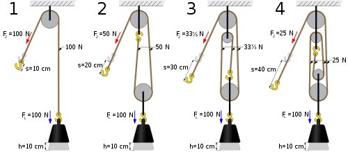

Una polea es una máquina simple, un dispositivo mecánico de tracción, que sirve para transmitir una fuerza. Consiste en una rueda con un canal en su periferia, por el cual pasa una cuerda que gira sobre un eje central. Además, formando conjuntos —ap
arejos o polipastos— sirve para reducir la magnitud de la fuerza necesaria para mover un peso.
Según la definición de la Goupillière, «la polea es el punto de apoyo de una cuerda que moviéndose se arrolla sobre ella sin dar una vuelta completa»[1] actuando en uno de sus extremos la resistencia y en otro la potencia.
Las primeras evidencias de poleas se remontan al Antiguo Egipto en la Duodécima Dinastía (1991-1802 a. C.)[2] y la Mesopotamia a principios del segundo milenio a. C.[3] En el Egipto romano, Herón de Alejandría (c. 10-70 CE) identificó la polea como una de las seis máquinas simples utilizadas para levantar pesos.[4] Las poleas se ensamblan para formar un bloque y aparejo con el fin de proporcionar ventaja mecánica para aplicar grandes fuerzas. Las poleas también se ensamblan como parte de correa y transmisión de cadena para transmitir la potencia de un eje giratorio a otro.[5][6] La obra de Plutarco Vidas paralelas relata una escena en la que Arquímedes demostró la eficacia de las poleas compuestas y del sistema de bloqueo y enganche utilizando una de ellas para tirar de un barco completamente cargado hacia él como si se deslizara por el agua
